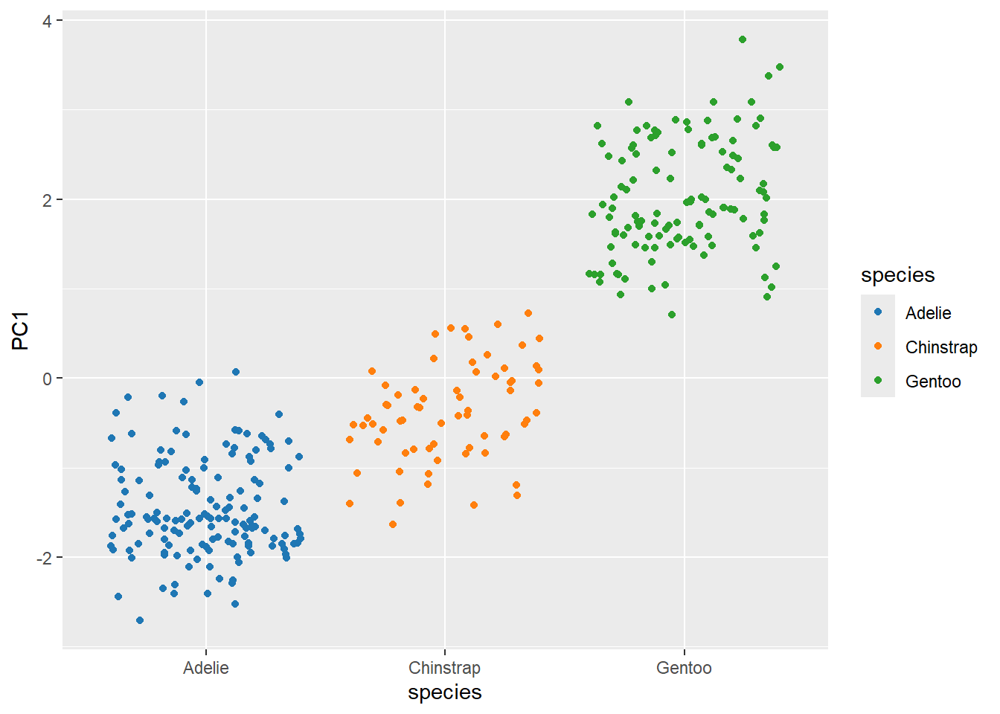

library(tidyverse)
library(palmerpenguins)Visualize embeddings using four popular dimensionality reduction techniques
1 How to reduce dimensionality in dataset
Feature elimination
Feature selection
Feature extraction
2 Global Structure vs Local Structure
Global structure refers to the overall shape or arrangement of the entire dataset.
Local structure refers to the relationships among nearby points or neighbors in the original high-dimensional space.
3 Principal Component Analysis
Principal Component Analysis (PCA) is a technique that reduces the number of variables in a dataset while preserving most of the variation (or information) present in the original data. It does this by transforming the original variables into a smaller set of new variables, called principal components, which are uncorrelated and ordered so that the first few capture most of the variation in the data. This gives linear transformations of the original data. These new features do not overlap with each other.
3.1 Steps
Standardize the Data
Calculate covariance Matrix
Find the principal components
3.2 Example
pca_data <- penguins |>
drop_na() |>
select(where(is.numeric)) |>
select(-year) |>
scale()
pca_data |> head() bill_length_mm bill_depth_mm flipper_length_mm body_mass_g
[1,] -0.8946955 0.7795590 -1.4246077 -0.5676206
[2,] -0.8215515 0.1194043 -1.0678666 -0.5055254
[3,] -0.6752636 0.4240910 -0.4257325 -1.1885721
[4,] -1.3335592 1.0842457 -0.5684290 -0.9401915
[5,] -0.8581235 1.7444004 -0.7824736 -0.6918109
[6,] -0.9312674 0.3225288 -1.4246077 -0.7228585pca_fit <- pca_data |>
prcomp()
pca_fitStandard deviations (1, .., p=4):
[1] 1.6569115 0.8821095 0.6071594 0.3284579
Rotation (n x k) = (4 x 4):
PC1 PC2 PC3 PC4
bill_length_mm 0.4537532 -0.60019490 -0.6424951 0.1451695
bill_depth_mm -0.3990472 -0.79616951 0.4258004 -0.1599044
flipper_length_mm 0.5768250 -0.00578817 0.2360952 -0.7819837
body_mass_g 0.5496747 -0.07646366 0.5917374 0.5846861# Obtain eigenvalues and make a scree plot understand the contribution of each PC
library(broom)
pca_fit |>
tidy(matrix="eigenvalues")# A tibble: 4 × 4
PC std.dev percent cumulative
<dbl> <dbl> <dbl> <dbl>
1 1 1.66 0.686 0.686
2 2 0.882 0.195 0.881
3 3 0.607 0.0922 0.973
4 4 0.328 0.0270 1 pca_fit |>
tidy(matrix="eigenvalues") |>
ggplot(aes(x=PC, y=percent))+
geom_col(fill="red", alpha=0.7) +
scale_y_continuous(labels=scales::label_percent(),
breaks = scales::breaks_pretty(n=6))+
labs(y= "Variance explained",
title="Scree plot")pca_fit |>
tidy(matrix="eigenvalues") |>
ggplot(aes(x=PC, y=cumulative))+
geom_point(size=4) +
geom_line(color="red")+
scale_y_continuous(labels=scales::label_percent(),
breaks = scales::breaks_pretty(n=6))+
labs(y= "Cumulative Variance explained",
title="Another Variant ofScree plot")pca_fit |>
tidy("loadings")# A tibble: 16 × 3
column PC value
<chr> <dbl> <dbl>
1 bill_length_mm 1 0.454
2 bill_length_mm 2 -0.600
3 bill_length_mm 3 -0.642
4 bill_length_mm 4 0.145
5 bill_depth_mm 1 -0.399
6 bill_depth_mm 2 -0.796
7 bill_depth_mm 3 0.426
8 bill_depth_mm 4 -0.160
9 flipper_length_mm 1 0.577
10 flipper_length_mm 2 -0.00579
11 flipper_length_mm 3 0.236
12 flipper_length_mm 4 -0.782
13 body_mass_g 1 0.550
14 body_mass_g 2 -0.0765
15 body_mass_g 3 0.592
16 body_mass_g 4 0.585 pca_fit |>
augment(penguins %>% drop_na()) |>
as.data.frame() |>
head() .rownames species island bill_length_mm bill_depth_mm flipper_length_mm
1 1 Adelie Torgersen 39.1 18.7 181
2 2 Adelie Torgersen 39.5 17.4 186
3 3 Adelie Torgersen 40.3 18.0 195
4 4 Adelie Torgersen 36.7 19.3 193
5 5 Adelie Torgersen 39.3 20.6 190
6 6 Adelie Torgersen 38.9 17.8 181
body_mass_g sex year .fittedPC1 .fittedPC2 .fittedPC3 .fittedPC4
1 3750 male 2007 -1.850808 -0.03202119 0.23454869 0.5276026
2 3800 female 2007 -1.314276 0.44286031 0.02742880 0.4011230
3 3250 female 2007 -1.374537 0.16098821 -0.18940423 -0.5278675
4 3450 female 2007 -1.882455 0.01233268 0.62792772 -0.4721826
5 3650 male 2007 -1.917096 -0.81636958 0.69999797 -0.1961213
6 3625 female 2007 -1.770356 0.36567266 -0.02841769 0.5046092pca_fit |>
tidy("scores")# A tibble: 1,332 × 3
row PC value
<int> <dbl> <dbl>
1 1 1 -1.85
2 1 2 -0.0320
3 1 3 0.235
4 1 4 0.528
5 2 1 -1.31
6 2 2 0.443
7 2 3 0.0274
8 2 4 0.401
9 3 1 -1.37
10 3 2 0.161
# ℹ 1,322 more rowspca_fit |>
augment(penguins |> drop_na()) |>
rename_with(function(x){gsub(".fitted","",x)}) |>
ggplot(aes(x = PC1, y = PC2, color=species))+
geom_point() +
scale_color_manual(values = c('#1f77b4', '#ff7f0e', '#2ca02c'))library(plotly)
augmented_data <- pca_fit |>
augment(penguins |> drop_na()) |>
rename_with(~ gsub(".fitted", "", .x))
augmented_data# A tibble: 333 × 13
.rownames species island bill_length_mm bill_depth_mm flipper_length_mm
<chr> <fct> <fct> <dbl> <dbl> <int>
1 1 Adelie Torgersen 39.1 18.7 181
2 2 Adelie Torgersen 39.5 17.4 186
3 3 Adelie Torgersen 40.3 18 195
4 4 Adelie Torgersen 36.7 19.3 193
5 5 Adelie Torgersen 39.3 20.6 190
6 6 Adelie Torgersen 38.9 17.8 181
7 7 Adelie Torgersen 39.2 19.6 195
8 8 Adelie Torgersen 41.1 17.6 182
9 9 Adelie Torgersen 38.6 21.2 191
10 10 Adelie Torgersen 34.6 21.1 198
# ℹ 323 more rows
# ℹ 7 more variables: body_mass_g <int>, sex <fct>, year <int>, PC1 <dbl>,
# PC2 <dbl>, PC3 <dbl>, PC4 <dbl># Create 3D plot using plotly
fig <- plot_ly(
data = augmented_data,
x = ~PC1,
y = ~PC2,
z = ~PC3,
color = ~species,
colors = c('#1f77b4', '#ff7f0e', '#2ca02c'),
type = 'scatter3d',
mode = 'markers'
)
figpca_fit |>
augment(penguins |> drop_na()) |>
rename_with(function(x){gsub(".fitted","",x)}) |>
ggplot(aes(x = species, y = PC1, color=species))+
geom_jitter() +
scale_color_manual(values = c('#1f77b4', '#ff7f0e', '#2ca02c'))
4 t-Distributed Stochastic Neighbor Embedding (t-SNE)
It preserves local structure: points that are close together in the high-dimensional space stay close in the low-dimensional map.
This is sensitive to parameters like perplexity (which balances attention between local and global structure).
This is a non-linear dimension reduction technique.
4.1 Here’s how t-SNE works:
Calculate Pairwise Similarities in High-Dimensional Space:
For each data point, t-SNE calculates the probability that other data points are its neighbors, based on their Euclidean distances.
These probabilities are modeled using a Gaussian distribution, where closer points have higher probabilities of being neighbors.
A key concept here is “perplexity,” which can be thought of as a measure of the effective number of neighbors for each point. It influences the standard deviation of the Gaussian kernels, adapting to the local density of the data.
Calculate Pairwise Similarities in Low-Dimensional Space:
Initially, data points are randomly placed in the lower-dimensional space.
Similarities between these low-dimensional points are then calculated using a Student’s t-distribution (with one degree of freedom, also known as a Cauchy distribution). The heavy tails of the t-distribution allow dissimilar points to be placed further apart in the embedding, helping to prevent crowding in the center.
Minimize Kullback-Leibler Divergence:
The core of t-SNE lies in iteratively adjusting the positions of the low-dimensional points to minimize the difference between the high-dimensional and low-dimensional similarity distributions.
This difference is quantified using the Kullback-Leibler (KL) divergence, a measure of how one probability distribution diverges from another.
Gradient descent is used to optimize the positions of the low-dimensional points, pushing points with high similarity in the high-dimensional space closer together in the low-dimensional space, and pushing points with low similarity further apart.
penguins <- penguins |>
drop_na() |>
select(-year) |>
mutate(ID=row_number()) library(Rtsne)
set.seed(142)
tSNE_fit <- penguins |>
select(where(is.numeric)) |>
column_to_rownames("ID") |>
scale() |>
Rtsne()
tSNE_fit$Y |> head() [,1] [,2]
[1,] 7.909944 6.203389
[2,] 10.524525 6.861234
[3,] 13.387486 6.154607
[4,] 5.860460 3.783936
[5,] 2.159498 3.039864
[6,] 10.021554 6.286049Your turn: Visualize data in the reduced dimensional space generated by t-SNE
5 Uniform Manifold Approximation and Projection (UMAP)
Preserves both local and global structure: It tries to maintain the local neighborhood relationships between points as well as overall data structure better than some other methods.
Faster than t-SNE: UMAP is typically faster than t-SNE, especially on larger datasets.
Scalable: It can handle large datasets efficiently.
Flexible: Parameters can be tuned to emphasize local versus global structure.
library(umap)
set.seed(142)
umap_fit <- penguins |>
select(where(is.numeric)) |>
column_to_rownames("ID") |>
scale() |>
umap()
umap_fitumap embedding of 333 items in 2 dimensions
object components: layout, data, knn, configumap_df <- umap_fit$layout |>
as.data.frame() |>
rename(UMAP1="V1",
UMAP2="V2") |>
mutate(ID=row_number()) |>
inner_join(penguins, by="ID")
umap_df |> head() UMAP1 UMAP2 ID species island bill_length_mm bill_depth_mm
1 -7.641382 -2.544566 1 Adelie Torgersen 39.1 18.7
2 -6.626174 -2.923671 2 Adelie Torgersen 39.5 17.4
3 -6.633875 -3.565240 3 Adelie Torgersen 40.3 18.0
4 -8.868123 -3.090137 4 Adelie Torgersen 36.7 19.3
5 -9.615170 -2.032278 5 Adelie Torgersen 39.3 20.6
6 -7.110448 -2.950273 6 Adelie Torgersen 38.9 17.8
flipper_length_mm body_mass_g sex
1 181 3750 male
2 186 3800 female
3 195 3250 female
4 193 3450 female
5 190 3650 male
6 181 3625 femaleYour turn: Visualize data using UMAP and identify interesting patterns/ anomalies.
6 Pairwise Attraction and Repulsion (PACmap)
PACmap, or “Pairwise Attraction and Repulsion,” is a dimensionality reduction technique similar to t-SNE or UMAP, designed to visualize high-dimensional data in a lower-dimensional space (typically 2D or 3D) while preserving local and global data structure.
7 Summary
Many dimensionality reduction methods like t-SNE focus mainly on preserving local structure but can distort global structure (clusters may look separated or mixed in misleading ways).
Methods like PCA preserve global structure well (linear relationships and distances), but sometimes fail to capture complex local neighborhood patterns.
UMAP tries to balance both: keeping local neighbors together while also maintaining a meaningful global layout
8 Exercise
https://github.com/jlmelville/snedata
install.packages("remotes")
remotes::install_github("jlmelville/snedata")
mnist <- download_mnist()